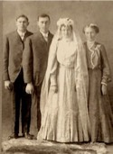

The Kleinsorge Family Tree - Family Card
The Kleinsorge Family Tree - Family Card
KLEINSORGE, Theodor(Jul 7, 1852 - Mar 17, 1932)HEIM, Adam(Aug 1, 1856 - Jan 4, 1937)
VOELMER, Karoline Baldina(Nov 29, 1856 - Nov 12, 1880)ZIEGENFUSS, Mary Ann(Dec 13, 1859 - Apr 17, 1930)
m. Feb 1, 1907, Westphalia, Kansas


b. Jul 9, 1878, Heiminghausen, Schmallenberg, Germany
d. Feb 25, 1959, Leoville, Kansas
ado.
b. Sep 26, 1885, Salem, South Dakota
d. Apr 8, 1935, Dresden, Kansas
ado.
Children
KLEINSORGE, John Theodore(Feb 24, 1908 - Nov 12, 2000)
KLEINSORGE, George Adam(Dec 8, 1909 - Dec 22, 1998)
KLEINSORGE, Amelia(Dec 24, 1912 - 2006)
KLEINSORGE, Leo Antone(Dec 21, 1915 - Mar 20, 1999)
KLEINSORGE, Theresa Margaret(Mar 30, 1918 - Nov 15, 2002)
KLEINSORGE, Aloysius(Oct 15, 1920 - )
KLEINSORGE, Martin(Oct 4, 1922 - )
KLEINSORGE, Clara(Apr 8, 1925 - Feb 12, 1993)
KLEINSORGE, William Lawrence(Aug 13, 1927 - 2006)
KLEINSORGE, Rita(Aug 10, 1930 - )